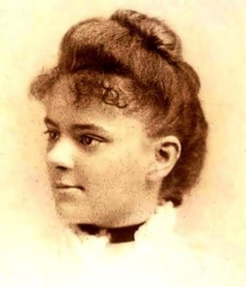
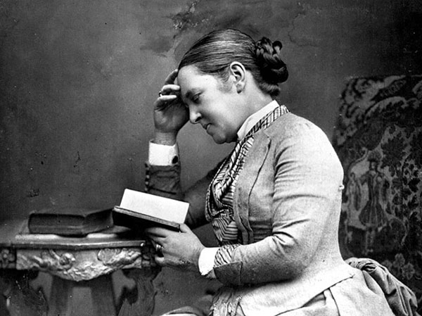

Biography
Elizabeth Blackwell was born on February 3rd, 1821 in Bristol, England. Her parents were Samuel Blackwell, a sugar refiner, and Hannah Blackwell. She was the third of nine children. Elizabeth had a very happy, positive, and good upbringing, due especially to the loving influence of her father, Samuel. Blackwell's parents were extremely progressive, meaning they worked for social change, more specifically, the end of slavery.
In the beginning of her career, Blackwell taught music at an academy in Asheville, North Carolina, so that she could save enough money to attend a medical institution. After this closed, she moved to Charleston to teach at a boarding school. There, a college of her's attributed to the possibility of Blackwell attending medican school by sending letters to institutions. After this unsuccessful attempt, she moved to Philadelphia and New York, hoping that she could find medical studies there.
Once in Philadelphia, she studied with Dr. Jonathan M. Allen so that she was able to get her food in the door at any medical institutions in the city. This did not work, and many people told her to either disguise as a man or move to Paris. This was because "she was a woman and therefore intellectually inferior" and she might have been able to compete with the males already in medical studies, which was intimidating to them.
Finally, Blackwell was admitted into the Geneva Medical College in New York . Sadly, her acceptance was almost an accident, as she was admitted because the institution thought that her application was a joke. The faculty of the college thought that Blackwell was joking by applying, so they allowed the medical students to decide if the college should admit her. The men assumed she was not serious about going to classes, so they voted for the school to let her in, but once they found out she was serious, they were completely shocked. Blackwell went on to be the first women to receive a medical degree, she became a midwife, and then a speciality doctor for women and children. She is the pioneer for women in the medical field and ever since, she had been an idol to women aspiring to become doctors today!